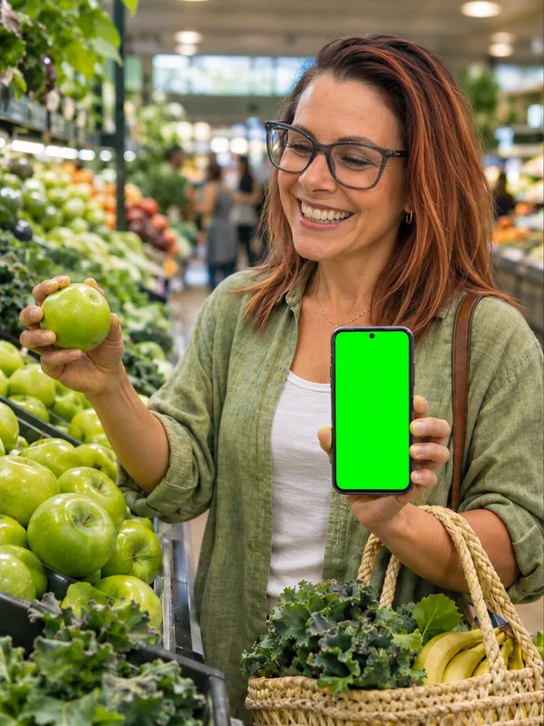
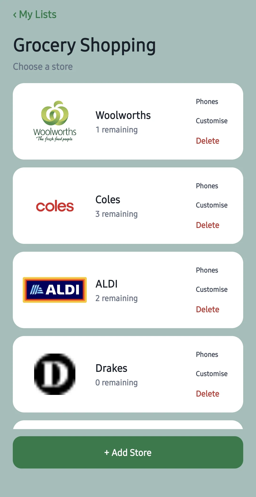
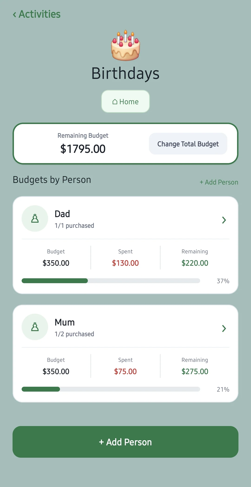
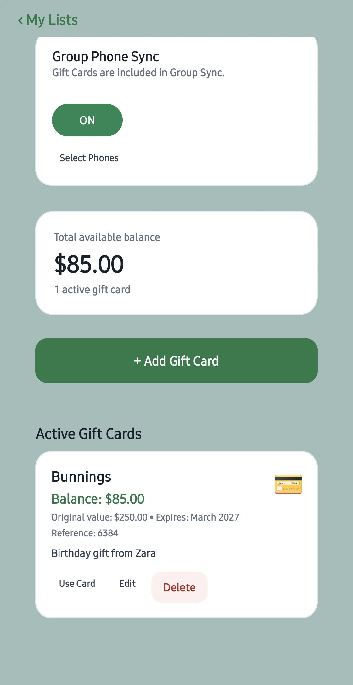
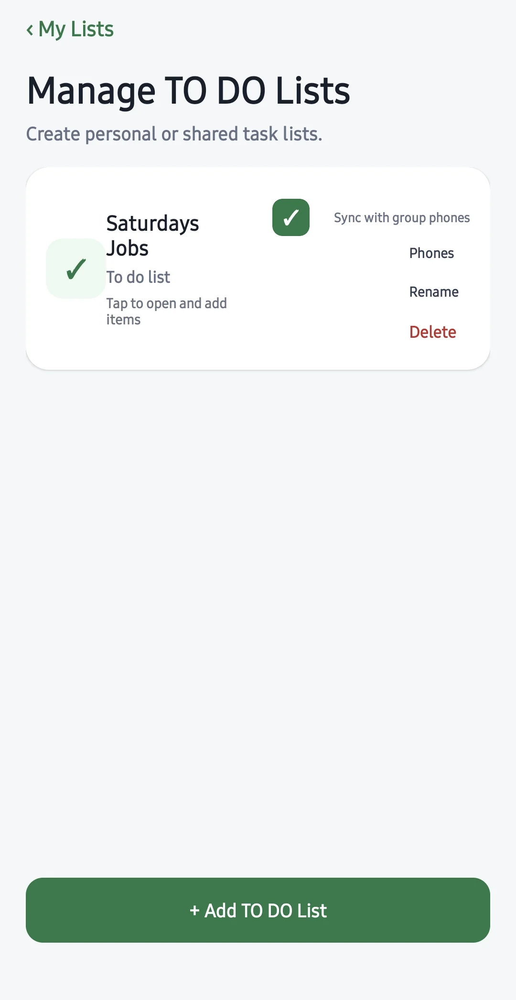

🛒
Keep a list for each store
Add stores from your own country, create shopping lists for each one, and scan supported product barcodes from Australia and overseas to add items faster.
Made in Australia. For shoppers everywhere.
✦ SHOPPING LISTS FOR ANDROID
Make a list for each store, add items as you think of them and tick them off while you shop. With Premium, share a list so everyone can see what’s still needed.


YOUR NEXT GROCERY RUN
Write down what’s running low. Add items by name or scan a supported product barcode.
Open the list when you get to the store. Check off what’s in your trolley and see what you still need.
With Premium, send your family an invite code. They can join free, add items and tick them off on their own phones.
See how sharing works →ONE APP, SO MANY WAYS TO PLAN
Use the same app for groceries this week, a birthday next month and the jobs you need to get done today.
Add stores from your own country, create shopping lists for each one, and scan supported product barcodes from Australia and overseas to add items faster.
Plan Christmas and birthday gifts by person, record purchases and keep an eye on what’s left to spend.
Keep gift-card details together and track remaining balances as you use them.
Organise chores, work, holidays and projects with checkable to-do lists and flexible activities.
Personalise lists with colours, icons and photos. Choose your preferred currency display.
With Premium, share a store, activity or to-do list with family. They join free with an 8-number code, and changes show on everyone’s phone straight away.
TAKE A LOOK INSIDE
Explore real screens for store lists, gift budgets, gift-card balances and to-dos.



LATEST UPDATE
Shared lists are here, along with brighter, easier-to-read colours, clearer Help and the fixes below.
Fixes for Gift Cards retaining changes after restarting and Birthday photos saving and displaying correctly.
Improved handling of advertising consent. Free users see a small banner ad, which is hidden while you type; verified Premium users remain ad-free.
Performance, stability and compatibility updates for supported Android phones and tablets.
PREMIUM · PURCHASES
Upgrade to Premium through Google Play inside the app; RevenueCat checks the purchase and enables Premium. Premium removes ads and the 15-item-per-list limit, and lets you share your own lists.
Premium is a one-time Google Play purchase tied to your Google account. We have not changed how you pay.
Already purchased Premium? You should not need to buy it again just because the app updates. Open the app normally using the Google Play account associated with the purchase. If Premium does not appear, use the in-app Restore Purchases option where available or contact support before purchasing again. Purchase and restore behaviour is subject to Google Play and RevenueCat verification.
Shared lists and Premium: the first time you share a list, the app confirms your Premium purchase. If it can’t, tap Restore Purchases and try again. People who join your lists do not need Premium.
No. It is independently developed in Australia but designed for shoppers internationally. You can add shops from your own country and scan supported product barcodes from Australia and overseas. Product matches depend on available barcode data, and Google Play availability may vary by country.
Yes. The free version supports up to 15 items per individual list and includes advertising, and you can join shared lists for free. Premium removes the limit and ads, and lets you share your own lists.
With Premium, open a store, activity or to-do list and tap Share, then Share this list. Send the 8-number invite code to the people you want. Only people with the code can join, and you can make a new code, remove people or stop sharing at any time.
No. Anyone can join a shared list for free with the invite code. Everyone in the list can add and tick items; deleting other people’s items needs the group password, if the owner set one. Joining does not give members Premium for their own lists.
No. Photos for items, list tiles and gift-list people stay on the phone where they were added, including in shared lists. Budgets also stay on each phone.
If you share your own lists, add your email first: tap Shared lists, then Add my email. On your new phone, tap Shared lists, then Moved from another phone? Sign in with email, and your shared lists come back. Use Restore Purchases to get Premium back. If you only joined other people’s lists, just join again with the invite code.
Open Settings → Help & How To in the app, or email wilkoenterprises@outlook.com.
THE STORY BEHIND THE APP
Hi! I'm the independent Australian developer behind My Shopping Lists.
I created this app to bring everyday shopping, gift planning, budgets and to-do lists into one easy-to-use place — without making organisation feel like another job. Although developed in Australia, My Shopping Lists is designed for shoppers in many countries, not just Australia.
Whether you're planning a shopping list at home or keeping a birthday surprise under wraps, my aim is to make the little things simpler so there's more time for the important things. Now your family can share lists too.
Thanks for supporting an independently developed app.
READY WHEN YOU ARE
Start with a list for your next shop. Download My Shopping Lists for Android.